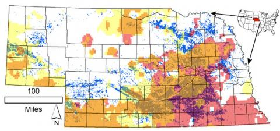
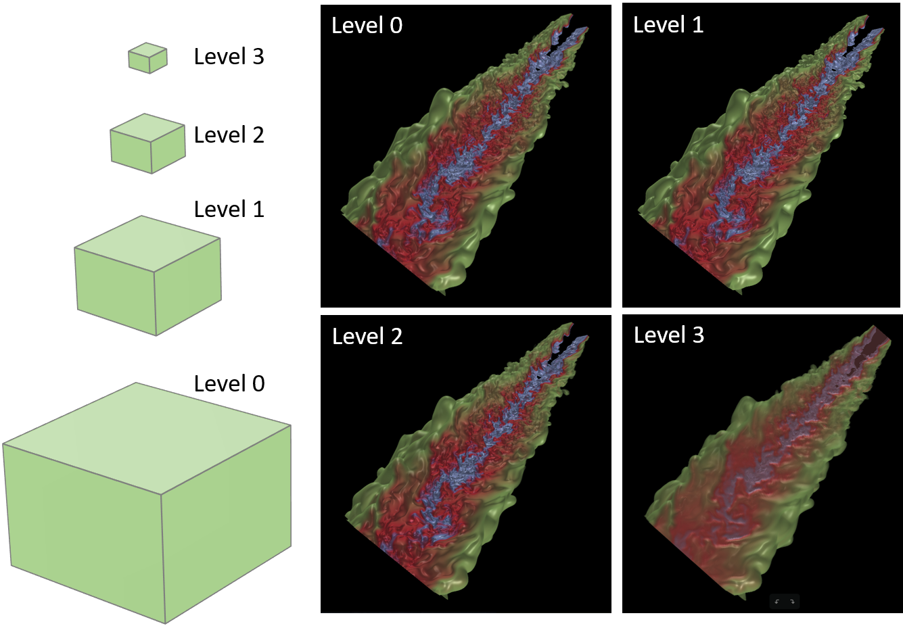
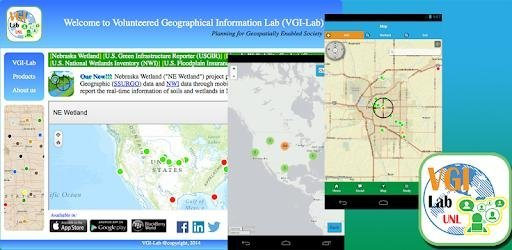
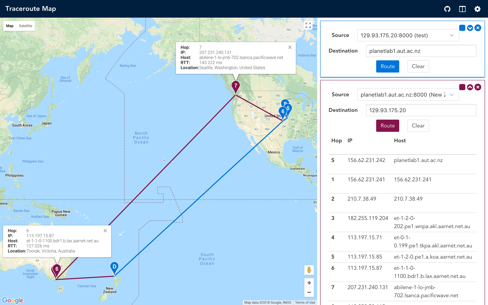

About Me
Intro
Emerging computer science major educated and trained in developing and designing systems and applications to facilitate business objectives. Adept at modifying and updating software to achieve desired goals. Skilled at facilitating systems testing and validation procedures, consulting with team on project status and working through technical challenges. Able to consult with engineering staff to evaluate software/hardware interfaces and develop specifications and performance requirements. Exemplary background in conducting data visualization for scientific data.
TECHNICAL EXPERTISE
C++, Python, Java, JavaScript, HTML, CSS, SQL, OpenGL, WebGL
Linux, Windows, Mac
Experience & Projects
Feel free to check them out!

|
INSIGHT: An Integrated Network of Scientific Information & GeoHydrologic Tools Support and facilitate web development and modeling projects to assist the Department of Natural Resources in analyzing and presenting the hydrological data across Nebraska pertaining to natural resource use. Participated in web design, maintenance, and software development for INSIGHT (Integrated Network of Scientific Information & Geohydrologic Tools) to provide annual snapshot of water conditions across the state. Utilized JavaScript, HTML, ArcGIS and SQL database to deliver the visualization of the hydrological data. check it here |
|

|
Predicting Governmental Water Distribution using Deep Learning The goal of this project is to build a flexible model which is not only capable of identifying the complex non-linear relationship between the input and output hydrologic data but also be able to learn the government's behavior in the allocation of water resources, so that our prediction result can help policymakers make or adjust a water distribution plan quickly. We used regression as the baseline and competitor and the experimental result shows that the average accuracy of the water distribution prediction is increased by 63.2%. |

|
Interactive data Visualization System for Optimal Data Layout Built map interface to conduct interactive analyses of diverse datasets through visual/graphical interactions, NSF EarthCube project. The interface is supported by a backend cluster of 16 lightweight nodes running SciDB. check it here |
|

|
View-Dependent Data Prefetching for Interactive Visualization of Large-Scale 3D Scientific Data One of greatest challenges for today's interactive visualization is the efficient analysis and visualization of large-scale data, and I/O simply becomes a major performance bottleneck. We propose a new data management policy to support interactive large-scale visual analytics. We characterize users' data access patterns according to their data-dependent and view-dependent visualization operations, and leverage application knowledge to derive a novel scheme to predict data access during the interactive operations. Based on the prediction results, we develop a data replacement policy to exploit data locality and minimize data movement across multiple levels of a memory hierarchy. We have evaluated our approach on machines with multiple hierarchical memory levels and compared it with state-of-art data replacement methods and demonstrate the effectiveness of our approach. The project combines C++, OpenGL, CUDA, and Machine Learning Techniques to deliver the visualization of the scientific data. |

|
Interactive Visualization Interface for 3D models An end-to-end system that can interactively visualize 3D plant data to study its growth. The user interface can not only query the same plant by the date but also provides quantitative analysis capabilities that give the user a very accurate surface area result for the selected area. Github |
|

|
Nebraska Wetlands Mobile App: Empower Mobile Technology and Citizen Science for Nebraska Wetland Conservation The overall goal of this project is to develop interactive mobile devices which will allow stakeholders and citizens to report the real-time observation information to wetland managers. Using this mobile app, wetland managers, researchers and general citizens can easily view Nebraska Wetland program information and educational materials. With the touch of a button, users will have access to information such as the Nebraska Wetland plant encyclopedia, National Wetland Inventory map and the Soil Survey Geographic database. In addition, users can report information like messages, photos, and videos for wetland monitoring and assessment, wetland management and restoration, and wetland permitting and mitigation. Google Play & App Store |
|

|
Traceroute Visualization Formulated tool to visualize the traceroute process on Google Maps in real time using Vue.JS. This project is a web application, where a user could pick up a source host and input the domain name or IP as the destination to run traceroute and the result would show up on the map as a complete path from the source to the destination with the intermediate routers. Live Demo |